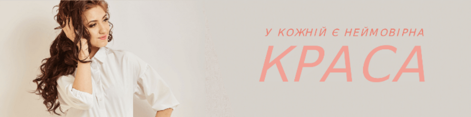
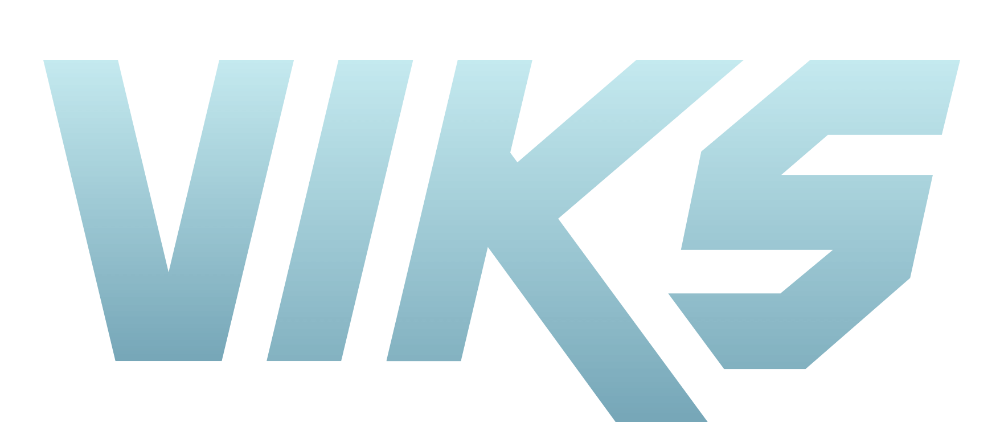

ПРО НАС
Компанія VIKS основана в 2019 році.
ЧОМУ ВАРТО ЗАМОВИТИ У НАС
Можливо, один з головних аргументів у нашій користі - 60% покупців повертаються, щоб зробити повторне замовлення. Клієнти називають і інші наші переваги: величезний асортимент: тільки в розділі "Сукні" представлено понад 5000 товарів на будь-який смак, колір та бюджет; з 2020 року ми експортуємо одяг VIKS - високу якість нашої роботи оцінили за межами України; розміри повністю відповідають розмірній сітці; простота повернення та обміну; приємні ціни та знижки для оптових покупців: чим більше опт, тим більше знижка; можливість індивідуального пошиву по Вашим міркам.
Наша спеціалізація - продаж доступного жіночого, чоловічого та дитячого одягу для будь-яких випадків: на кожен день, нарядна, для спорту і т. д. Ми ростемо і розвиваємося щодня, і це все завдяки Вам. Наша молода компанія спеціалістів живе роботою, отримує від неї задоволення і вдосконалюється щотижня. Тисячі позитивних відгуків клієнтів мотивують нас до виконання роботи ще краще.
Туроператор №1 в Україні 
Щоб Ваш онлайн-шопінг був насправді вигідним, ми щодня робимо знижки на моделі в останньому розмірі, надаємо клієнтам бонуси на повторне замовлення та знижку 100 гривень за реєстрацію на сайті.
Ваш зручний шопінг - це ми!